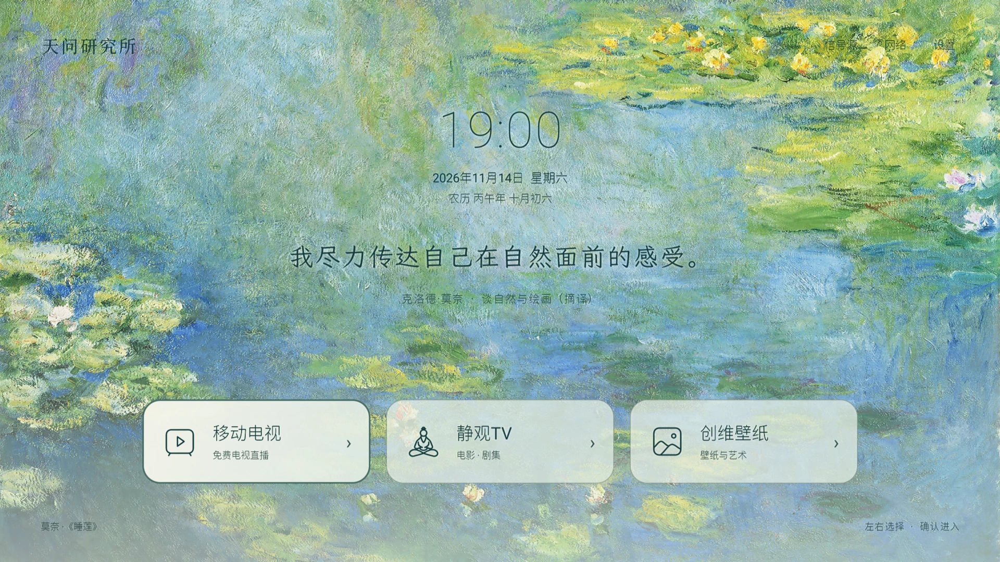
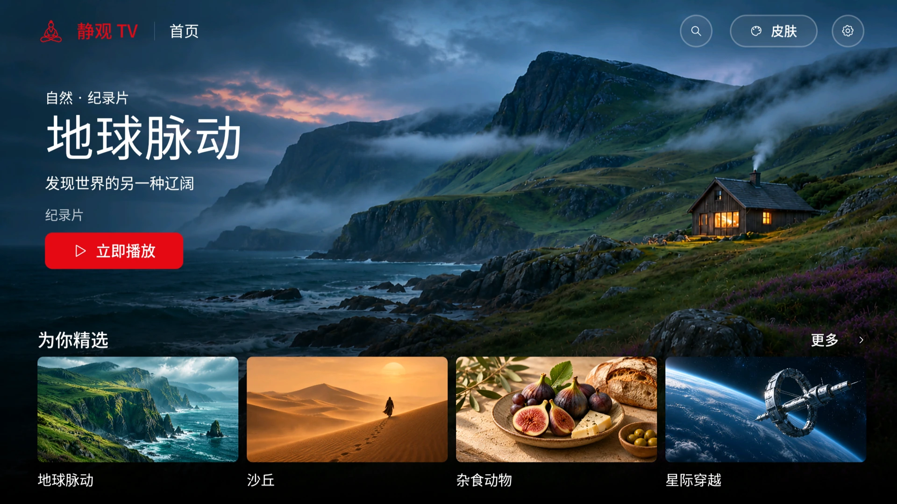

当前实机
ArtHome 3.4-art.20
静观 TV V2.4.0
2026.11.14 成果记录你是否也遇到过？
- 打开先等广告
- 会员之外还要会员
- 找个频道绕几层
这次改造，从清爽首页和免费直播入口做起。
少绕几步，直接看 / THE EXPERIENCE
首页清爽。
常用入口，就在眼前。
移动电视看直播，静观 TV 选片。
想换个画面，还有创维壁纸。
艺术首页 ARTHOME
首页，不放广告。
睡莲背景，时间日期，三个常用入口。免费直播放到首页，不用先翻找应用。
- 移动电视、静观 TV、创维壁纸，入口各归其位
- 遥控器左右选择，确认进入
- 闲置五分钟后，进入原生艺术屏


静观 TV JINGGUAN
选好，就开播。
原生电视界面，遥控选片。
一次确认，开始观看。


下次打开，也一样 / MADE TO STAY
重启之后，
熟悉的首页还在。
本机已验证重启后自动返回首页。
恢复测试与具体数据，留在成果记录里。
两次重启后的真实画面
画面可放大查看


以上为这一台设备的已验证场景，其他型号需适配。具体观察范围见成果记录。
看看这次改了什么 / IN PICTURE
首页、直播、选片、壁纸。
看一遍，就明白。
四个常用场景，
已部署实机呈现。
从你的设备开始 / BEFORE YOU START
先了解适配，
再开始改造。
这是一个基于自有电视的改造实践项目。
目前验证设备为创维 A6F Ultra，其他型号需要单独适配。
想知道的，直接说 / QUESTIONS
几个常见问题。
“无广告、全网通、免费看”具体指什么？
自制首页不放广告，首页与静观应用本身免费使用；常用直播和多来源选片集中进入。当前已核验免费甘肃卫视。第三方节目、平台和片源的授权、费用及可用性由对应服务决定，不代表所有内容永久免费或已去除节目内广告。
所有品牌、所有型号都能用吗？
目前只在这一台创维 A6F Ultra 上完成验证。不同品牌、系统版本和遥控器行为需要分别适配，不能直接套用本机结果。
所有频道和影片都免费吗？
没有这样的承诺。已核验移动电视入口可以进入免费甘肃卫视；其他频道、影片及第三方服务受各自的授权、费用和可用性约束，不保证外部片源长期可用。
可以用小爱语音直接控制吗？
真人小爱语音测试尚未通过，当前不作为可用功能。已验证的静观操作是遥控选片、一次确认开播和局域网播放控制。
静观 V2.4 和双皮肤已经装上电视了吗？
V2.4.0已安装，真实4K首页已检查，用户确认可以使用。更多、双向换肤焦点和新版一键首帧仍按逐项验收记录区分；本页展示已部署新版的实机画面。
首页上的句子会自动轮换吗？
当前 art20 使用固定莫奈摘译。此前的百句十分钟轮换已停用，不属于当前功能。
这是创维官方产品，或一个现成的 AI 助手吗？
这是一个独立的电视改造实践项目，与创维没有官方合作或背书关系。“AI爆改电视”是项目名称，不表示已实现语音助手或对话式 AI 功能。第三方品牌与内容的权利归各自权利人所有。
从踩坑到方法 / LESSONS LEARNED
首页装好之后，
才是验证的开始。
主页键接对、直播真正开播、重启后自动回来。
这次爆改最有价值的经验，是把日常使用走完整。
一起交流 / GET IN TOUCH
也想让电视，
用起来更舒服？
对改造方案、适配经验或合作感兴趣，欢迎邮件交流。
AI TV REMIX / FIELD NOTES